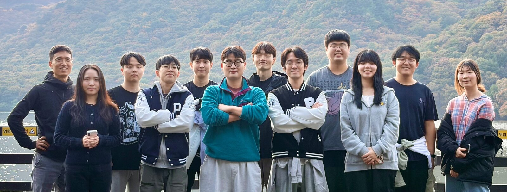
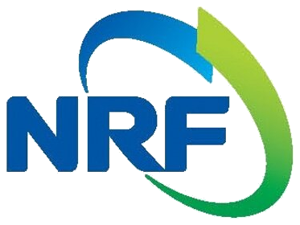
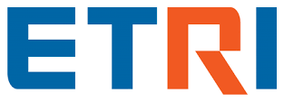

We pursue research in machine learning and optimization. To this end, we develop theories and algorithms using computational and mathematical tools. Our ultimate goal is to provide robust and provable solutions to challenging problems in artificial intelligence, particularly those in large-scale settings. We are passionate about translating our findings into practical applications that can benefit society. For further details on our research directions and ongoing projects, please refer to the Research.
Recent News
If you want to see our earlier news, check out here!
Acknowledgements
Our research is generously supported by multiple organizations including government agencies and national initiatives (NRF, IITP, National AI Research Lab). We also collaborate with researchers at ISTA, EPFL, Seoul National University, Google, and ETRI.

